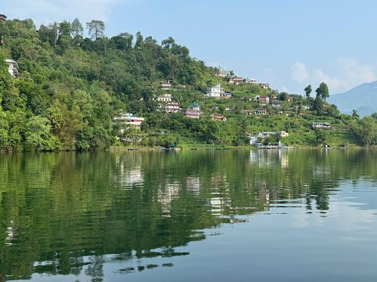

Pokhara city Sightseen Tour Package by Private Vechile
Welcome to the ultimate **Pokhara Sightseeing Tour** provided by **Tilicho Tours & Travels**, a premier **government registered company** and trusted **local travel expert** located at **Lakeside Pokhara**. This comprehensive, high-ranking **One Day Pokhara Tour** covers all major **places to visit in Pokhara**, taking you smoothly from an early morning **sunrise tour** to a historic evening Aarti ceremony. Whether you choose an **affordable Pokhara tour** for a personalized **Pokhara couple tour** or a premium family vacation, our modern **Pokhara car rental with driver** platform ensures complete comfort, top-tier reliability, and a fully **flexible itinerary** with zero hidden fees.
Beyond our signature cultural sightseeing itineraries, our experienced team provides seamless bookings for local adventures, including **paragliding in Pokhara**, **ultralight flight** windows, **hot air balloon** rides, exciting **bungee jump** setups, high-wire **zipline** paths, or an unforgettable **Annapurna Base Camp helicopter tour**. Discover how easily you can explore the top **Pokhara tourist attractions** with an English-speaking guide by checking out our official 2026 rates below.
Pokhara Sightseeing City Tour Packages By Private Vechile (Private Tour )
Compare our most popular Pokhara Sightseeing Tour, Pokhara City Tour, Half Day Tour and Full Day Pokhara Tour Packages on your choosen time with most experence driver .
| Tour Details | Half Day Option 1 | Half Day Option 2 | Half Day Option 3 | Full Day Option 1 | Full Day Option 2 |
|---|---|---|---|---|---|
| Duration | 4 Hours | 4 Hours | 4 Hours | 5–6 Hours | 5–6 Hours |
| Places Covered |
1. Pumdikot Shiva Statue 2. World Peace Pagoda 3. Davis Falls 4. Gupteshwor Mahadev Cave |
1. Bindhyabasini Temple 2. Seti River Gorge 3. Hanging Bridge (Bhalam) 4. Old Pokhara Bazaar 5. Davis Falls 6. Gupteshwor Mahadev Cave |
1. Sarangkot Sunrise Viewpoint 2. Bindhyabasini Temple 3. Old Pokhara Bazaar |
1. Pumdikot Shiva Statue 2. World Peace Pagoda 3. Davis Falls 4. Gupteshwor Mahadev Cave 5. International Mountain Museum 6. Old Pokhara Bazaar 7. Bindhyabasini Temple 8. Seti River Gorge 9. Hanging Bridge (Bhalam) 10. Mahendra Cave 11. Bat Cave 12. Tal Barahi Temple |
1. Sarangkot Sunrise Viewpoint 2. Bindhyabasini Temple 3. Old Pokhara Bazaar 4. Regional Museum 5. Davis Falls 6. Gupteshwor Mahadev Cave 7. Tibetan Refugee Camp 8. International Mountain Museum 9. Tal Barahi Temple |
| Pickup | Hotel Pickup | Hotel Pickup | Early Morning Hotel Pickup | Hotel Pickup | Early Morning Hotel Pickup |
| Drop Off | Hotel / Lakeside | Hotel / Lakeside / Tal Barahi Temple | Hotel / Lakeside | Hotel / Lakeside | Hotel / Lakeside |
| Best For | Nature & Spiritual Tour | Culture, Heritage & Nature | Sunrise & Mountain View | Complete Pokhara Sightseeing | Sunrise, Culture & Museum Tour |
✅ Tour Includes
- Air-Conditioned Private Vehicle as per booked plan
- Professional and Experienced Driver
- Hotel Pickup Service
- Hotel / Lakeside Drop Service
- Fuel, Parking Fees and Road Taxes
- Driver Salary, Food and Accommodation
- All Government Taxes and Service Charges
❌ Tour Excludes
- Any Entrance Fees or Monument Tickets
- Personal Food, Drinks and Mineral Water
- Any Additional Place Visit Outside the Itinerary
- Any Extra Vehicle Usage Beyond the Package Duration
- Waiting Time Beyond the Maximum Allowed Tour Duration
- Personal Expenses and Travel Insurance
📋 Booking Rules & Cancellation Policy
- Cancellation made more than 24 hours before trip departure time: 25% cancellation charge applies.
- Date change or trip postponement is free in case of bad weather, flight disruption, natural disaster or emergency situations.
- Additional waiting time and extra sightseeing beyond the itinerary may incur extra charges.
- Tour timing and route may be adjusted due to traffic, weather or local conditions.
- Guests are advised to arrive on time for pickup.
1. Fixed Point Tour Package Rates
| Vehicle Type | Seating Capacity | Pokhara Tour Price (Net) |
|---|---|---|
| Private Sedan Car (AC) | Up to 4 Passengers | NRS 9,500 |
| Private Luxury SUV Van 10 seat/Scorpio jepp 7 seat | Up to 10 Passengers | NRS 13,500 |
| Private Hiace Minibus | Up to 15 Passengers | NRS 20,000 |
| Deluxe Tourist Bus Frame | Up to 30 Passengers | NRS 25,000 |
2. Full-Day Disposal Service Rates
| Vehicle Type | Disposal Capacity | Pokhara Tour Cost (Net) |
|---|---|---|
| Private Sedan Car | Comfortable 4 Seats | NRS 12,000 |
| Scorpio Jeep / Big Van | 7 to 10 Seats Max | NRS 16,000 |
| Private Hiace Van | Spacious 15 Seats | NRS 25 ,000 |
| Large Deluxe Tourist Bus | Spacious 35 Seats | NRS 30,000 |
Pokhara Daily Sharing Tour Packages
🚌 Full Day City Tour (Option 1)
The ultimate classic Pokhara experience covering all major historical, religious, and natural landmarks.
Destinations Included:- David's Fall & Gupteshwor Mahadev Cave
- Shanti Stupa (World Peace Pagoda) & Shiva Temple
- Bindabasini Temple & Old Bazar
- Mahendra Cave, Bat Cave & Seti River Gorge
- Gorkha Museum
- Drop-off: Tal Barahi Temple / Phewa Lake side
🏞️ Lakes & Museum Tour (Option 2)
A peaceful alternative showcasing Pokhara's stunning eastern lakes, native wildlife, and mountaineering heritage.
Destinations Included:- Tranquil Begnas Lake exploration
- Scenic viewpoints of Rupa Lake
- Pokhara Zoological Park (Wild Animal Rescue)
- International Mountain Museum
- Return drop-off back to your hotel area
🌅 Sarangkot Sunrise Tour (Option 3)
Witness a spectacular morning sunrise over the Annapurna Himalayan range from Pokhara's top viewpoint.
Pickup Windows:- Summer: 04:30 AM hotel pickup
- Winter: 05:30 AM hotel pickup
- 1-Hour premium sunrise viewing at Sarangkot Top
- Scenic downhill drive via Methlang Hills
- Drop-off at your hotel between 8:00 AM – 9:00 AM
Private Tour Booking
We will provide tour by private Taxi - car / van / jeep / Hiace / or Bus with experienced driver.
Sharing Vehicle Booking
For Sharing Van: our experienced driver will perform guide work. For Sharing Bus: one professional tour guide is included for the whole bus for free.
Pokhara Sightseeing Places Details – Natural & Cultural Landmarks
Explore the ultimate travel guide to the **best places to visit in Pokhara**, Nepal's premier adventure and cultural hub. From majestic snow-capped Himalayan viewpoints to deeply sacred Hindu temples and Buddhist shrines, discover the top natural and cultural attractions that make a **Pokhara Sightseeing Tour** unforgettable.


Pumdikot Shiva Statue – Giant Religious Hotspot
The first major highlight on your **Pokhara Sightseeing Tour** brings you up to the majestic **Pumdikot Shiva Statue**, a soaring religious tourism phenomenon sitting high on a hilltop south of Phewa Lake. Standing as the tallest Lord Shiva monument in the region, this grand 108-foot complex features a massive sitting deity surrounded by 108 individual Shiva Lingas arranged in a beautiful circular pavilion structure.
As you walk around the elevated temple platforms, you will experience a perfect mix of profound spiritual devotion and unparalleled natural beauty. The site offers incredible, unobstructed 360-degree views of the entire **Annapurna mountain range**, Mount Machhapuchhre, and the green valley basin below, making it an essential destination for heritage photography and sunrise viewing.


World Peace Pagoda – Tranquil Shanti Stupa
Perched dramatically on the narrow crest of Anadu Hill, the famous **World Peace Pagoda (Shanti Stupa Pokhara)** stands as a brilliant white symbol of global harmony and spiritual tranquility. Built by Buddhist monks from the Nipponzan-Myohoji order, this massive double-tiered pagoda houses pristine golden statues of Lord Buddha representing crucial milestones of his life journey.
Reaching the monument involves either a peaceful boat ride across the lake followed by a lush forest hike, or a scenic drive up the ridge line. Once at the top, visitors can walk the quiet, meditative circuits while enjoying postcard-perfect panoramic views of **Phewa Lake** reflecting the sharp, snowy peaks of the mountains, especially during the vibrant golden hours of sunset.


Davis Falls – Mysterious Underground Waterfall
Known locally by its historic name *Patale Chhango* (meaning Hell's Falls), **Davis Falls** is an extraordinary natural geological wonder that captures the powerful force of nature. The roaring waters of the Pardi Khola river cascade through a rocky, naturally carved canal before taking a dramatic, vertical plunge into a deep, dark underground tunnel system.
The waterfall is named after a Swiss tourist who tragically washed away in the currents in the mid-20th century. During the peak summer monsoon season, the water volume multiplies rapidly, creating a terrifyingly beautiful spectacle of rushing foam and dense mist that disappears completely into the hidden subterranean cave network below the surface.


Gupteshwor Mahadev Cave – Sacred Subterranean Shrine
Located directly across the street from Davis Falls, the legendary **Gupteshwor Mahadev Cave** stands as one of the longest, most widely revered natural limestone caves in Nepal. Descending down a magnificent, ornately carved concrete spiral staircase, visitors enter a dramatic underground cavern system that has served as a holy place of worship for generations.
The front section of the cave holds an ancient, self-formed stalagmite shrine dedicated entirely to Lord Shiva. For adventurous travelers, walking deeper down the damp, illuminated rock paths leads to the inner chamber, where you can look up through a dark opening to see the roaring waters of Davis Falls crashing down into the dark abyss.


Old Pokhara Bazaar – Historic Cultural Marketplace
Step away from the modern, westernized tourist strip of Lakeside and journey into the past at the **Old Pokhara Bazaar**. This historic commercial neighborhood serves as a living museum, preserving the unique architectural styles and local trading traditions of the valley from an era when it was a vital resting point on the ancient trans-Himalayan trade route.
Walking down these old cobblestone streets reveals beautiful century-old Newari brick houses, adorned with intricately carved dark wooden window frames and traditional open-front storefronts. Here, you can watch local merchants trade authentic spices, handmade brass utensils, and daily goods, providing a genuine glimpse into the city's rich heritage.


Bindhyabasini Temple – Ancient Hindu Pagoda
The next vital stop on your **Pokhara Cultural Tour** brings you to the historic **Bindhyabasini Temple**, a premier spiritual sanctuary located on a small, tree-lined ridge in the old city area. Established in the late 18th century, this temple features a beautiful classical Shikhara-style white structure and is entirely dedicated to Goddess Durga / Bhagwati, the guardian deity of the entire valley.
The stone courtyards are filled with the scent of burning incense, fresh marigold flowers, and the echo of morning prayer bells as local Hindu devotees gather daily for worship. In addition to its deep cultural and spiritual importance, the temple's elevated position offers peaceful views of the old town market below and the northern **snow-capped mountains** rising sharply above the city horizon.


Seti River Gorge – Hidden Deep Limestone Chasm
The mysterious **Seti River Gorge** is a fascinating geological wonder that flows completely hidden directly beneath the bustling streets of the city. Over thousands of years, the wild, milky-white glacier waters of the Seti River have carved out a terrifyingly deep, exceptionally narrow canyon path right through the limestone rock foundations of the valley.
Because the gorge is so narrow and filled with dense overhanging trees, it is almost invisible from standard roads. Tourists can safely stand on designated suspension bridges, like the KI Singh Bridge, to peer directly down into the dark, roaring chasm below, witnessing the incredible power of the rushing river far beneath the surface.


Hanging Bridge (Bhalam) – Classic Steel Suspension Path
For travelers seeking an authentic taste of rural Nepal without venturing far from the city limits, the long **Hanging Bridge at Bhalam** offers an exciting off-the-beaten-path experience. This classic iron-wire suspension footbridge spans high above a wide river valley, connecting rural farming communities directly to the modern city infrastructure.
Walking across the long, gently swaying deck provides a rush of adrenaline along with panoramic views of traditional green terraced agricultural fields, rolling forested hillsides, and quiet country homes. It serves as a prime photography spot to capture the rustic beauty of rural lifestyles set against the majestic mountain backdrop.


Mahendra Cave – Historical Stalactite Limestone Cavern
Situated in the northern suburbs of the city, the legendary **Mahendra Cave** stands as one of Pokhara's oldest and most famous natural tourist attractions. Named after the late King Mahendra Bir Bikram Shah, this large, dark limestone cavern features wide underground chambers that stretch deep into the rock hillsides.
As you walk along the artificially lit, safe concrete footpaths inside the cave, you can observe intricate, naturally formed stalactites and stalagmites dripping from the stone ceilings. Many of these ancient rock pillars are revered by local pilgrims as natural representations of Lord Shiva and other traditional Hindu deities.


Bat Cave (Chameri Gufa) – Wild Subterranean Adventure
Located just a short walk away from Mahendra Cave, the thrilling **Bat Cave**, known locally as *Chameri Gufa*, offers an exciting eco-adventure for bold travelers. Unlike other highly developed caves, this natural limestone cave maintains its raw, rugged state, featuring a narrow, dark stone entrance that leads into a large inner cavern.
Looking up at the moist rock ceilings with your flashlight, you will see thousands of small horseshoe bats clinging to the stones. The most famous feature of this adventurous cave is its incredibly narrow, vertical exit hole at the back, where visitors locally believe that only those free of sin can successfully squeeze through to the surface.


Tal Barahi Temple – Iconic Lake Island Pagoda
Concluding your sightseeing tour is the postcard symbol of the city: the magnificent **Tal Barahi Temple**. This unique two-tiered wooden pagoda temple sits on a small, lush green island right in the middle of **Phewa Lake**. The shrine is dedicated to Goddess Barahi, a powerful manifestation of Shakti, serving as a primary protector deity of the valley.
The only way to reach this peaceful island sanctuary is by boarding a traditional colorful wooden boat from the Lakeside shores. As you float across the calm water, you can enjoy stunning views of the temple's golden roof reflecting on the lake surface against a backdrop of green hills and distant mountain peaks, making it the perfect final stop.


International Mountain Museum – Discover Nepal's Himalayan Heritage
The **International Mountain Museum (IMM)** stands out as one of the premier tourist attractions in Pokhara, Nepal, making it an absolute must-visit destination during every **Pokhara Sightseeing Tour**, **Pokhara City Tour**, and custom **Pokhara Tour Package**. Established by the Nepal Mountaineering Association (NMA) and officially opened on 5 February 2004, it is recognized globally as the only dedicated mountain museum of its kind and holds the proud title of being Nepal's first disabled-friendly museum. Sprawling across a beautiful 12.5-acre property at the direct gateway to the Annapurna Himalayan Region, the museum brilliantly preserves the history of the world's mountains, Himalayan cultures, mountaineering triumphs, and scientific knowledge all under one roof.
Inside, the museum features fascinating exhibitions detailing the Himalayan mountain system, mountain geology, glaciers, unique flora, fauna, and the pressing modern challenges of climate change alongside the evolution of mountaineering. Visitors can dive deep into the rich traditions, lifestyles, costumes, music, and heritage of Nepal's native mountain communities—including the Sherpa, Gurung, Thakali, Tamang, Magar, Rai, Limbu, Sunuwar, Yakkha, and Chhantyal people—while also learning about mountain cultures from international countries such as Japan, Taiwan, and Slovenia. Masterfully curated displays include an authentic sacred Sand Mandala, a traditional Lakhang (Buddhist Prayer Room), an outdoor living mountain village, and a giant 31-foot walk-up Mt. Manaslu model.
One of the museum's biggest highlights is the iconic Hall of Mountain Activities. Here, travelers can discover the complete history of Himalayan expeditions, legendary climbers, and the historic first successful ascents of the world's 14 mountains above 8,000 meters. Original climbing equipment, historic expedition photographs, vintage maps, rugged rescue gear, Everest postage stamps, and custom exhibits honoring famous mountaineers such as Maurice Herzog, Junko Tabei, and Toshio Imanishi provide an unforgettable journey through mountaineering history. Interactive galleries also explain mountain conservation, Himalayan biodiversity, environmental protection, and the critical effects of global warming on melting glaciers and sensitive mountain ecosystems.
Surrounded by beautifully manicured green gardens that showcase spectacular panoramic views of the **Annapurna Himalayan Range**, the International Mountain Museum is one of the best places to visit in Pokhara for trekkers, climbers, students, families, photographers, and nature lovers alike. Whether you are deeply interested in Mount Everest, Annapurna, Machhapuchhre (Fishtail Mountain), Himalayan indigenous culture, trekking history, or adventure tourism, this world-class museum offers an incredibly inspiring experience and remains an essential stop on your next journey through Nepal.
- Mount Everest – 8,848.86 m (World's Highest)
- Dhaulagiri I – 8,167 m
- Manaslu – 8,163 m
- Annapurna I – 8,091 m
- Machhapuchhre (Fishtail) – 6,993 m
- Annapurna South – 7,219 m
- Hiunchuli – 6,441 m
- Established by the NMA in 2004
- The only dedicated mountain museum in the world
- Nepal's first disabled-friendly museum facility
- Original expedition gear and climbing records
- Traditional village, Buddhist Lakhang & Sand Mandala
- Climate change & mountain ecosystem exhibits


Sarangkot Sunrise Tour – Best Himalayan Viewpoint in Pokhara
Your signature **Sarangkot Sunrise Tour** begins with a scenic early morning drive up to the valley's premier hilltop ridge station, situated at an altitude of 1,600 meters. As the highest standard **Tour Operator in Pokhara** and an authorized **Government Registered Company**, our **Pokhara Holiday Package** provides the ultimate dawn experience. This spot serves as the absolute best **Sunrise Viewpoint** in Nepal for watching the breathtaking **Golden Sunrise** break over the snow-capped peaks of the majestic **Annapurna Mountain Range**. As dawn approaches, the alpine skyline transforms into an unforgettable canvas of pink, orange, and gold, creating a paradise for **Sunrise Photography** and professional **Mountain Photography**.
From this high-altitude panoramic ridge, travelers enjoy an expansive **Himalayan Panorama** showcasing several legendary **Snow-Capped Mountains** with immense vertical reliefs. You will clearly see **Mt. Dhaulagiri** (8,167 meters—the 7th highest peak on Earth), the massive walls of **Mt. Annapurna I** (8,091 meters—the 10th highest peak globally), and the sharply pointed holy peak of **Mt. Machhapuchhre (Fishtail Mountain)** (6,993 meters). The majestic vista also highlights **Annapurna South** (7,219 meters), the steep rocky slopes of **Hiunchuli** (6,441 meters), **Nilgiri Himal**, and the eastern anchor of **Lamjung Himal** (6,983 meters). Looking down from the ridge reveals an equally stunning view of the emerald **Phewa Lake**, the bustling streets of **Lakeside Pokhara**, and the sweeping natural landscape of the entire **Pokhara Valley**.
Booking a **Pokhara Local Tour** with a **Licensed Tour Company** guarantees an elite experience. Your excursion features a premium **Private Vehicle**, **Comfortable Transportation**, an **Experienced Driver**, and a friendly **Sarangkot Local Guide** or **English Speaking Guide** who provides deep geographical insights. We offer seamless **Hotel Pickup & Drop** directly from your accommodation in **Pokhara City**, maintaining a strict **Best Price Guarantee** with **No Hidden Cost**, **Free Cancellation**, and the convenience of **Instant Booking**. Whether you choose a **Flexible Departure** or join our popular **Daily Departure**, our **Travel Agency in Pokhara** ensures a completely **Safe Travel** environment managed by a trusted **Local Expert in Pokhara**.
Beyond the spectacular **Himalayan Sunrise**, Sarangkot is the primary launch zone for thrilling outdoor recreation. Adventure seekers can experience world-class **Paragliding in Sarangkot** or book the high-velocity **Paragliding Pokhara** tandems, alongside the extreme **Sarangkot Zipline** as part of a comprehensive **Pokhara Adventure Tour**. For those preferring a slower pace, an early morning **Hiking to Sarangkot**, an immersive **Himalayan Trek**, a peaceful **Nature Walk**, or quiet **Bird Watching Sarangkot** sessions offer the perfect mountain escape. Let our premier **Nepal Tour Operator** and dedicated **Pokhara Travel Agency** team guide you on this unforgettable Himalayan journey.
⏰ Approximate Monthly Sunrise Times in Sarangkot (Pokhara)
Sarangkot sunrise times in Pokhara vary throughout the year depending on the season. The earliest sunrises occur in June/July around 5:10 AM, while the latest are in December/January around 6:40 AM. To catch the prime Himalayan glow, your private vehicle will leave your Pokhara hotel roughly 45–60 minutes before dawn.
| Month | Estimated Sunrise Time | Month | Estimated Sunrise Time |
|---|---|---|---|
| January | 6:40 AM – 6:50 AM | July | 5:10 AM – 5:20 AM |
| February | 6:30 AM – 6:40 AM | August | 5:20 AM – 5:40 AM |
| March | 6:00 AM – 6:30 AM | September | 5:40 AM – 5:55 AM |
| April | 5:30 AM – 6:00 AM | October | 5:55 AM – 6:15 AM |
| May | 5:15 AM – 5:30 AM | November | 6:15 AM – 6:35 AM |
| June | 5:10 AM – 5:15 AM | December | 6:35 AM – 6:45 AM |
Note: These figures are monthly averages. The exact time shifts by a few minutes daily depending on seasonal coordinates.
- Mt. Dhaulagiri I – 8,167 m (7th Highest Globally)
- Mt. Annapurna I – 8,091 m (10th Highest Globally)
- Mt. Annapurna South – 7,219 m
- Mt. Machhapuchhre – 6,993 m (Sacred Holy Peak)
- Mt. Lamjung Himal – 6,983 m
- Mt. Hiunchuli – 6,441 m
- Nilgiri Himal – Visible Massif Boundary
There are only 14 independent mountains on Earth towering above 8,000 meters ("Eight-Thousanders"). Remarkably, Nepal is home to 8 of these global giants:
- 1. Mt. Everest – 8,848.86 m
- 3. Mt. Kangchenjunga – 8,586 m
- 4. Mt. Lhotse – 8,516 m
- 5. Mt. Makalu – 8,485 m
- 6. Mt. Cho Oyu – 8,188 m
- 7. Mt. Dhaulagiri I – 8,167 m (Visible)
- 8. Mt. Manaslu – 8,163 m
- 10. Mt. Annapurna I – 8,091 m (Visible)
Pokhara sightseen Additional placesee
Ohther pokhra beautiful lakes Temples , gorges , mountain and caves , natural and cultural places to discover whole beauty pokara

Phewa Lake – The Iconic Blue Heart of Pokhara City
**Phewa Lake** is the most famous and second-largest lake in Nepal, acting as the ultimate centerpiece for every **Pokhara Sightseeing Tour**[cite: 1]. Located in the heart of town, this sprawling body of water is a bustling hub for **boating**, canoeing, and premium water photography[cite: 1]. The absolute highlight of this lake is the sacred **Tal Barahi Temple**, a beautiful two-tiered Hindu pagoda situated on an island in its center[cite: 1]. Visitors booking a **Pokhara Holiday Package** can relax on traditional wooden boats while watching a spectacular **Himalayan Sunrise** mirror perfectly across the water's surface, offering an unforgettable view of the **Annapurna Mountain Range** and the iconic peak of **Machhapuchhre (Fishtail Mountain)**[cite: 1].
Why you should visit this place: It perfectly combines the energy of **Lakeside Pokhara** with serene spiritual history. Whether you want to enjoy an evening boat ride, visit the island shrine, or take pictures of the mountains reflecting on the water, it is the number one must-visit destination for any traveler working with a local **Tour Operator in Pokhara**[cite: 1].

Begnas Lake – The Quiet, Pristine Wilderness Escape
Located about 18 km (8.2 miles) east from Lakeside market in the beautiful Lekhnath area, **Begnas Lake** provides a much quieter, pristine, and lush green alternative to its busier twin[cite: 1]. This freshwater paradise is completely uncommercialized and surrounded by dense subtropical forests and emerald green hills[cite: 1]. The views here are spectacular; on clear days, you can see the white peaks of **Lamjung Himal** and the eastern Annapurna range towering behind the calm shorelines.
Why you should visit this place: It is the perfect spot for **peaceful boating**, canoeing, and sustainable freshwater fishing away from the crowds[cite: 1]. Travelers can book a day trip through a **Travel Agency in Pokhara** to enjoy a relaxing **nature walk**, eat fresh local fish at lakeside restaurants, and experience the quiet natural beauty of Nepal[cite: 1].

Rupa Lake – The Hidden Twin Eco-Sanctuary
Situated near Begnas Lake, **Rupa Lake** is a smaller, lesser-known twin that offers a tranquil escape, deep wilderness views, and local community fishing[cite: 1]. This long, winding lake is nestled down in a green valley basin surrounded by rolling hillsides[cite: 1]. Because it is tucked away from major roads, it provides an authentic look at traditional rural life along with clean air and beautiful views of the green hillsides and distant **snow-capped mountains**.
Why you should visit this place: It is highly recommended for nature lovers, hikers, and birdwatchers who want to experience absolute silence[cite: 1]. The lack of commercial boats ensures an undisturbed look at native flora and fauna, making it an excellent stop on an authentic **Pokhara Local Tour** managed by a **Licensed Tour Company**.

Khaste Lake – The Bird-Watching Haven & Wetland Asset
Located in the Lekhnath area, **Khaste Lake** is primarily recognized as a crucial wetland and bird-watching haven[cite: 1]. The lake is heavily surrounded by local organic farmlands and lush green forests, creating an ideal habitat for both land and water wildlife[cite: 1]. Visitors can look out across the reedy marshes to see traditional fish farming setups while enjoying views of the rural countryside and distant mountain peaks.
Why you should visit this place: If you love wildlife photography or **bird watching**, this is a top destination. The wetland serves as a major home for various waterbirds, making it a wonderful stop for a quiet afternoon **nature walk** away from the regular city attractions.

Dipang Lake – The Romantic Honeymoon Wetland
Found in Lekhnath, **Dipang Lake** is well known for its quiet, natural environment and serves as an important habitat for rare migratory birds during the colder months[cite: 1]. Often called the "Honeymoon Lake" by locals, this clear body of water is famous for growing beautiful wild white lotuses during the warmer seasons. The small lake is tucked into a bowl of low hills, creating a completely calm water surface that reflects the open sky and surrounding greenery.
Why you should visit this place: It offers an intimate, quiet atmosphere that is perfect for couples and photographers. Its pristine ecosystem is a wonderful example of Pokhara's hidden natural heritage, making it a great addition to an custom tour package with a **Sarangkot Local Guide** or expert naturalist.

Maidi Lake – The Lotus-Bloomed Ecological Gem
**Maidi Lake** is a smaller wetland lake in the Lekhnath cluster known for its ecological importance, rich aquatic ecosystem, and peaceful surroundings[cite: 1]. While compact, this marshy pool features a highly diverse ecosystem filled with native water plants and reeds. During the spring and summer months, the water surface turns into a colorful carpet of blooming lotuses and water lilies, backdropped by rolling green hillsides.
Why you should visit this place: It is an incredible spot for travelers who appreciate raw nature and botany. It offers a completely quiet escape where you can sit by the shore, listen to nature, and enjoy the rural landscape without any tourist crowds.

Gunde Lake – The Rolling Green Bird Sanctuary
Another significant wetland situated in the Lekhnath area, **Gunde Lake** is surrounded by lush vegetation and is highly regarded as a protected bird sanctuary[cite: 1]. Tucked into the southeastern corner of the valley, this quiet lake is bordered by gentle slopes and emerald forests[cite: 1]. From the banks, visitors can enjoy clear views of the rural countryside and spot various species of ducks, herons, and egrets feeding along the shores.
Why you should visit this place: It is a great destination for light hiking, country walks, and watching waterfowl in their natural habitat[cite: 1]. It offers an authentic look at the peaceful countryside that defines the outer edges of the **Pokhara Valley**[cite: 1].

Kahun Danda (Kahunkot Viewpoint) – The Serene Hidden Overlook
**Kahun Danda**, widely known as **Kahunkot Viewpoint**, stands as a fantastic, off-the-beaten-path alternative to the busier hill stations. Resting at a peaceful elevation northeast of the main city center, this viewpoint features a historic concrete view tower on its crest. The location offers sweeping, unobstructed views of the entire **Pokhara Valley** layout on one side and a close-up look at local farming villages on the other.
Why you should visit this place: It is highly recommended for travelers seeking deep relaxation, quiet **nature walks**, and crowd-free **sunrise photography**. Culturally, the trails reveal old-world rural lifestyle charms where local families maintain traditional terraced fields. Naturally, the summit treats you to a dramatic **Himalayan Panorama** stretching across **Annapurna South**, **Machhapuchhre (Fishtail Mountain)**, and **Lamjung Himal**, without the loud crowds found at other view towers.

Mattikhan Viewpoint – The Untouched Southern Horizon
Tucked away along the high southern ridges of the valley, **Mattikhan Viewpoint** is a highly rated hidden paradise offering unparalleled peace. Because it sits directly across from the main mountain walls, it provides a unique viewing perspective that showcases the sheer vertical heights of the Himalayas towering over the lower valley landscape.
Why you should visit this place: It is the perfect day-trip destination for premium **mountain photography** and couples seeking a quiet romantic getaway. Culturally, the surrounding Mattikhan village is home to welcoming Gurung and Brahman communities showcasing genuine rural hospitality. Naturally, standing on this southern ridge rewards you with an incredible panoramic view that covers the glistening **World Peace Pagoda**, the high **Pumdikot Shiva Statue** hill, and the massive snow peaks of the **Dhaulagiri** and Annapurna ranges all at once.

Kaskikot Darbar – The Ancient Ancient Kingdom Crest
**Kaskikot Darbar** is an invaluable historical and archaeological treasure sitting high up on a mountain crest west of Pokhara. This sacred hill serves as the ancient ancestral birthplace of the Shah Dynasty kings of Kaski, preserving old palace foundation ruins and the highly revered Kaskikot Kalika Temple shrine within its stone walls.
Why you should visit this place: It provides a marvelous mix of historical discovery, spiritual heritage, and deep trekking exploration. Culturally, it acts as a primary center for traditional Hindu rituals and festivals where local devotees climb up to pay respects at the temple fort. Naturally, because Kaskikot sits higher than neighboring Sarangkot, the viewpoint offers an absolute master-class view of **Mt. Dhaulagiri**, **Annapurna I**, and **Nilgiri Himal** to the north, while providing a stunning look down at **Phewa Lake** to the south.

Pame / Khapaudi Side & Ratmatedada – The Scenic Valley Docks
The continuous shoreline stretch covering **Pame**, **Khapaudi**, and the high outlook of **Ratmatedada** represents the ultimate lifestyle extension of upper **Phewa Lake**. While Khapaudi is widely loved for its creative lakefront cafes and open-air restaurants, continuing down the road leads you to Pame's green fields and the rolling climb up Ratmatedada, which overlooks the western wetlands.
Why you should visit this place: It is the prime destination in the valley for evening relaxation, catching local **golden sunset** reflections, and experiencing fresh local food. Culturally, the area seamlessly blends trendy modern traveler cafes with rustic farming lifestyles along the river banks. Naturally, this western corridor offers an amazing view where paragliders float down from Sarangkot against a backdrop of open waters, green terraced hills, and the distant, dramatic snow walls of the **Annapurna Mountain Range**.

Phewa Power House – The Dramatic Waterfall & Scenic Hanging Bridge
The hidden valley area around the historic **Phewa Power House** stands out as one of the most remarkable hidden gems near **Pokhara City**. Built as Nepal’s second oldest hydropower project, the facility marks the exact point where the outflow waters of **Phewa Lake** rush downward through a deep rocky ravine. This unique industrial heritage site has transformed over the years into a favorite escape for locals and travelers looking for dramatic natural water features away from the mainstream tourist crowds.
Why you should visit this place: It offers an incredible triple-attraction experience, combining a fascinating historic engineering site, a powerful rushing **waterfall**, and a classic high Nepali **hanging bridge (suspension bridge)** all in one spot. It is a highly rated playground for landscape photography, peaceful picnics, and adventurous riverside **nature walks**.
Cultural & Natural Synthesis: Culturally, the power house reflects Nepal's early journey into modern engineering, and walking across the long metal suspension bridge connects you directly with local villagers traveling between the traditional rural hillsides of Pardi. Naturally, the landscape is absolutely stunning; as the lake water pours past the dam gates, it crashes into a deep, raw canyon split, sending a cool mist through the air while providing a beautiful view of green jungle walls, rushing rapids, and the distant, towering peaks of the **Annapurna Mountain Range**.

Bhadrakali Temple – The Sacred Hilltop Shakti Peeth of Eastern Pokhara
>**Bhadrakali Temple** is a highly revered, ancient Hindu pilgrimage site perched beautifully on top of a lush, cone-shaped hillock historically known as *"Mudule Thumpko"* in eastern **Pokhara City**. Established in 1817, this prominent temple serves as a major, powerful **Shakti Peeth** dedicated to Goddess Bhadrakali—a fierce yet deeply benevolent and auspicious incarnation of Goddess Durga (or Kali) whose name translates to "blessed, beautiful, and prosperous". Enveloped by a dense, ring-shaped forest patch that forms a peaceful green island amidst the changing city landscape, it is an essential destination for travelers seeking authentic spiritual heritage, quiet **nature walks**, and stunning photography viewpoints.
Why you should visit this place: It is one of Pokhara’s most spiritually charged landmarks, offering completely **free entry** to its scenic grounds and historic shrines. According to sacred local legends, the temple originated when the goddess appeared in a local priest's dream, directing him to dig into the hill where her divine buried statue was miraculously discovered exactly as foretold. Today, the complex enjoys deep patronage from the Nepal Army and stands as an incredibly popular destination for traditional Hindu wedding ceremonies, morning meditation, and catching fresh panoramic breezes overlooking the valley houses and the majestic **Annapurna Mountain Range**.
🧗 Pathways, Deity Shrines & Peak Times: To reach the gorgeous pagoda-style main shrine at the summit, visitors can enjoy a scenic walk under a canopy of old-growth trees by climbing one of two stone stairways: the eastern route features 292 steps, while the southern approach offers a shorter 265-step climb. Surrounding the central goddess, the hilltop features smaller dedicated shrines for Lord Ganesh, Hanuman, Laxminarayan, and Suryanarayan, alongside a beautiful fish pond and an auspicious *Yagyamandap* (marriage pavilion). While peaceful on weekdays, the temple experiences a massive influx of local worshippers on Saturdays and comes alive with incredible cultural energy during the annual 10-day **Dashain Festival**.
- Admission Tickets: 100% Free Entry for all nationalities.
- Best Days for Culture: Saturdays or during late autumn Dashain festivities.
- Dress Code: Modest, respectful attire is highly appreciated on the holy hill.
- Footwear Note: Wear sturdy walking shoes to comfortably navigate the stone staircases.
- Combine this with a visit to the prominent Buddhist monastery **Buddha Gumba**, located just a short distance north.
- Easily pairs with a stop at nearby Matepani Gumba or the Pokhara Regional Museum in central Nayabazar.
- Great morning yoga and panoramic photography location.

Matepani Gumba – The Vibrant Hilltop Buddhist Sanctuary of Kundahar
**Matepani Gumba** (officially recognized as the **Matepani Buddhist Monastery**) is a breathtakingly vibrant spiritual sanctuary established in 1960 by Nyeshang Lama teachers who migrated from Manang. Perched majestically atop a green, prominent hillock in the Matepani-Kundahar area of eastern **Pokhara City**, this active monastic complex is globally celebrated for its brilliant, multi-colored Tibetan architecture. Offering completely **free entry** to its tranquil complex and expansive prayer halls, it stands as an incredible destination for cultural observers, spiritual seekers, and travelers looking for magnificent panoramic views over the sprawling city valley and the **Annapurna Mountain Range**.
Why you should visit this place: It is widely considered one of the most artistically detailed monasteries in western Nepal, featuring exceptional craftsmanship that beautifully showcases old Buddhist lore. The central shrine hall is a masterpiece of sacred art, housing a magnificent, towering gold-plated **Buddha statue** that sits flanked by Guru Rinpoche and various compassionate Bodhisattvas. The expansive walls, pillars, and high ceilings are completely adorned with incredibly detailed, hand-painted murals and vivid frescoes depicting complex stories from Buddha's life and wheel-of-life spiritual systems, providing an deeply moving atmosphere for quiet reflection or meditation.
🥁 The Monastic Routine & Smart Travel Options: Beyond its artistic marvels, Matepani Gumba functions as a thriving residential academy where dozens of monks live, study ancient scriptures, and practice sacred arts. Visitors who arrive during the early morning hours or mid-afternoon are frequently treated to the hypnotic, deeply powerful resonance of live monastic chants, rhythmic hand-drum beats, and traditional longhorns sounding from the main hall. Surrounded by manicured floral gardens and shaded resting pavilions, the hilltop acts as a magnificent photography platform to catch wide-angle views of the entire valley landscape.
- Private Route (Easiest): Hire a taxi directly from Lakeside or use local ride apps (Approx. NPR 600 – 900 one-way). Ask for "Matepani Gumba".
- Budget Public Route: Catch a local city bus to the main intersection at Mahendrapool or Prithvi Chowk, and switch to a direct local minivan heading to Matepani.
- The Walk: From the base of the hill, a short, sloping paved road takes you straight up to the entrance.
- Admission Cost: 100% Free Entry (Donation boxes available for support).
- Dress Code: Modest clothing (covered shoulders/knees) is highly recommended.
- Inside Protocol: Always remove your shoes before stepping onto the temple carpets, and follow local signs regarding interior photography.
- Tour Match: Easily pairs with a visit to the nearby Bhadrakali Temple.

Jangchub Choeling Monastery – The Cultural & Spiritual Heart of Hemja Yamdi
**Jangchub Choeling Monastery** (frequently called the **Hemja Tibetan Monastery**) is a majestic, deeply historical Buddhist sanctuary thriving inside the *Tashi Palkhel Tibetan Settlement* near Yamdi in the Hemja sub-valley. Established in the early 1960s with the spiritual blessings of high-ranking lamas, this sprawling complex serves as the vital cultural, religious, and social anchor for hundreds of Tibetan families living in the region. Highly admired for offering completely **free entry** to all global travelers, the monastery stands as a premier educational destination where visitors can witness traditional Himalayan spiritual lifestyles, rich artisanal crafts, and monastic traditions completely preserved in exile.
Why you should visit this place: It provides a rare, non-touristy immersion into a living monastic school that houses over 200 young and senior monks dedicated to Buddhist philosophy. The monastery has achieved global renown for its hypnotic **3:00 PM Afternoon Prayer Session (Puja)**. During this daily ritual, respectful travelers are invited to sit quietly in the rear of the grand sanctuary to experience the moving, deeply resonant sounds of synchronized chanting, heavy drum cadences, and the echoing blast of traditional Himalayan longhorns—a sound that carries centuries of high-altitude history.
🏺 Inside Details & Local Highlights: The main prayer hall (*Du-Khang*) is a visual marvel, featuring classic Tibetan architecture anchored by a spectacular 7-foot-tall gold-plated Buddha statue, beautifully surrounded by 1,000 miniature Buddha figurines and intricate, hand-painted religious murals covering the walls. Exploring past the temple gates reveals a vibrant community handicraft center where local artisans spin raw wool and hand-weave authentic, premium Tibetan carpets using ancient knotting styles. The settlement also features small showrooms packed with singing bowls and prayer beads, alongside cozy local eateries and a unique monastic café serving hot cappuccinos, traditional butter tea, and fresh Tibetan momo dumplings.
- Private Taxi / Motorbike (Easiest): Simply ask your driver for the "Hemja Tibetan Camp Gumba". A direct one-way ride takes around half an hour.
- Budget Public Bus: Board a local city bus from the Zero Kilometer junction up to Hari Chowk. Transfer there to any regional coach or van heading toward Hemja/Baglung, and request a drop at the Tashi Palkhel camp gate. It's a short, flat 5-minute walk from the highway.
- Puja Timing: Arrive by 2:45 PM to find a respectful seat before the 3:00 PM prayers commence.
- Etiquette Rules: Dress modestly by covering shoulders and knees. Always remove your footwear before stepping onto the temple carpets, and switch off cameras during active prayer.
- Tour Combination: Perfectly pairs with an overland trip to the suspension bridges or hiking loops near the upper Yamdi river valley.

Tashiling Tibetan Refugee Camp – Top Cultural Tour Destination in Chhorepatan
The **Chhorepatan Tibetan Camp** (officially registered as the **Tashiling Tibetan Settlement**) is a peaceful, authentic cultural village established in 1965 on land originally managed by the International Red Cross. Tucked away from the highly commercialized main streets, this unique community serves as a living monument to multi-generational heritage preservation in the **Pokhara Valley**. Offering completely **free entry** to walk the historic neighborhood lines, visit the sacred monastery, and view traditional craft zones, it ranks among the absolute top-rated cultural sightseeing day-trips for international backpackers and heritage travelers alike.
Why this is a top-searched Pokhara tour spot: Its strategic location makes it incredibly easy to integrate into a standard half-day city itinerary. Sitting a mere 350-meter walk directly across the asphalt road from **Devi's Fall** and the subterranean **Gupteshwor Mahadev Cave**, Tashiling acts as a quiet, deeply relaxing spiritual counterpart to the bustling nature parks. Wandering past rows of traditional white houses, fluttering prayer flags, and elderly residents spinning hand-held prayer wheels provides an immediate window into authentic Himalayan lifestyles, local history, and resilient community building.
🧶 Carpet Weaving, Monasteries & Entry Details: The true crown jewel of the village is the world-renowned **Tashiling Handicraft Centre**, where visitors can freely watch master artisans—predominantly elderly Tibetan women—spin raw mountain wool and hand-weave complex, museum-grade Tibetan wool carpets on traditional vertical looms. The community's spiritual anchor rests at the *Shree Gaden Dhargay Ling Monastery*, featuring a serene interior filled with vivid frescoes and large Buddhist statues. For an immersive historical look, the village includes a small, deeply moving **refugee history museum** (nominal entry fee of approx. NPR 50–100) packed with early settlement photographs and personal records detailing the Dalai Lama's historic Himalayan escape route.
- Taxi / Scooter Ride: Request "Chhorepatan Tibetan Camp" or "Devi's Fall" from Lakeside. A quick 10 to 15-minute drive via local streets.
- Budget Local Bus: Catch any urban public van or micro-bus heading towards Chhorepatan or Gharmi from Lakeside's main links. Step off directly at the main Devi's Fall transit gate; the camp's welcoming arched gateway sits just across the road.
- Authentic Souvenirs: The central courtyard features local curio stalls selling genuine hand-knotted wool rugs, singing bowls, and silver trinkets where all proceeds directly fund the community school and elderly healthcare.
- Tibetan Food Stop: Highly recommended for authentic, incredibly cheap local lunch stops. Enjoy fresh, handmade steamed momos, hot thukpa noodle soups, and salty Tibetan butter tea.

Tal Pari (Anadu Side) – The Secluded Forested Paradise Across the Lake
The **Tal Pari and Anadu side** of Pokhara is a peaceful, secluded paradise located on the south-western shores of **Phewa Lake**, directly opposite the busy, commercialized Lakeside city strip[cite: 1]. Nestled along the dense, untamed borders of the **Raniban Forest (Queen's Forest)**, this destination offers the ultimate escape from city chaos with unobstructed, wide-angle views of the lake water and the towering **Annapurna Mountain Range**[cite: 1]. It is an absolute dream destination for nature lovers, short hikers, yoga and meditation practitioners, and young couples looking for a romantic, quiet dating side to spend a day with their beloved.
Why you should visit this place: Unlike the bustling restaurants and neon lights of Baidam (Lakeside), Anadu and Tal Pari offer a quiet, rustic countryside holiday experience completely free of traffic noise[cite: 1]. Visitors can spend a full day enjoying **peaceful boating**, swimming in clean waters, engaging in fishing sports, or lounging at lakeside eco-resorts before catching a boat back to their hotel[cite: 1]. It serves as a major gateway to the **World Peace Pagoda (Shanti Stupa)**, where a beautifully shaded 45-minute stone staircase winds directly from the lakefront up through the jungle canopy[cite: 1].
🚶 Access & The Hiking Trail Options: To access this hidden shore, you can hire a scenic rowboat from Lakeside for a 20 to 25-minute crossing[cite: 1]. Alternatively, for trekking fans, there is an incredible "secret" walking trail built by **TAAN Gandaki** that starts near the Damside area[cite: 1]. This 30-minute lakeside foot trail runs right next to the water, tracing past quiet green properties and pristine forests straight into the heart of the Anadu side, making it perfect for a daytime nature walk[cite: 1].
- Taalpaari Hotel – Premium resort right on the water's edge with stone plunge pools and free guest boat shuttles[cite: 1].
- Anadu House – A slow-paced, boutique hillside getaway[cite: 1].
- Dining Tip – Enjoy organic meals directly at your chosen lodge kitchen, as there are no busy street grocery stores here[cite: 1].
- Pack insect repellent, sturdy hiking footwear, and flashlights.
- Coordinate your return boat ride across Phewa Lake with your boatman before dark, as night navigation is not recommended[cite: 1].
- Perfect for matching with a morning Shanti Stupa trek[cite: 1].

Ratna Mandir – The Historic Royal Palace Estate of Lakeside Pokhara
**Ratna Mandir** is an iconic, former royal estate situated gracefully in the Gaurghat area of **Lakeside Pokhara**[cite: 1]. Built by King Mahendra in 1956 as a private retreat for Queen Ratna, this magnificent lakeside property served as a highly secure vacation home where the former royal family would visit twice a year to unwind, often staying for up to a month at a time[cite: 1]. Long hidden behind closed doors and heavily guarded by military personnel, the property is managed by the Nepal Trust and officially opened its grand gates to the public in 2023, turning into a premier destination for anyone looking to discover the rich cultural heritage and elite history of **Pokhara City**[cite: 1].
Why you should visit this place: It offers a rare, fascinating glimpse into the luxurious daily lives of Nepal's past monarchy, surrounded by beautifully preserved architecture and thick, ancient greenery[cite: 1]. Visitors can take a peaceful **nature walk** across the massive lawns, look out at the beautiful views of **Phewa Lake** and the **Annapurna Mountain Range**, and enjoy the cool, quiet breezes coming off the water—completely away from the noisy main streets of Lakeside[cite: 1]. It is incredibly easy to visit, located just a short 10-15 minute walk along the main Lakeside promenade or accessible via a quick rowboat ride across the water[cite: 1].
👑 Key Features & Visiting Highlights: The centerpiece of the estate is the main cottage-style palace building, which holds 11 elegantly designed rooms that housed the King and Queen's private bedrooms, dining quarters, and formal meeting halls[cite: 1]. The sprawling forested compound also includes a dedicated lake house, a children's playground garden, and traditional resting spots like the *Hawa Ghar* (Wind House)[cite: 1]. While you are fully encouraged to explore the tree-filled paths, please note that photography is strictly prohibited inside the main palace building to protect its historic interiors[cite: 1]. Do not be discouraged by the military presence at the front gates; the public ticket booth is open daily during standard daytime hours (10:00 AM to 5:00 PM)[cite: 1].
- Foreign Tourists: NPR 500[cite: 1]
- SAARC Nationals & Indian Tourists: NPR 200[cite: 1]
- Nepali Citizens: NPR 100[cite: 1]
- Students & Differently-Abled Guests: NPR 50[cite: 1]
- Combine this with a boat tour to nearby Tal Barahi Temple[cite: 1].
- Perfect for families, senior citizens, and history lovers.
- Keep your camera tucked away inside the main palace rooms[cite: 1].

Annapurna Butterfly Museum – The Hidden Ecological Gem of Bagar
The **Annapurna Butterfly Museum** (officially registered as the **Annapurna Natural History Museum**) is a magnificent, quiet educational treasure located in the Bagar neighborhood of north **Pokhara City**[cite: 1]. Tucked away directly inside the peaceful, tree-lined premises of the **Prithvi Narayan Campus (Tribhuvan University)**, this highly rated destination offers a complete escape from the typical tourist trails[cite: 1]. Curated beautifully to showcase the incredible biodiversity of the **Annapurna Mountain Range** and the wider country, the museum is highly celebrated for being **completely free of cost to enter**, making it an affordable, insightful stop for students, nature lovers, and families alike[cite: 1].
Why you should visit this place: It holds one of the most comprehensive insect collections in Asia, making it a dream stop for anyone interested in science, photography, or eco-tourism. Much of this meticulous collection is credited to Colin Smith, a legendary British researcher affectionately known across Nepal as *"Butterfly Baje"* (Grandfather Butterfly)[cite: 1]. Visitors booking a custom **Pokhara Holiday Package** can take a relaxing walk through the open university grounds, view these stunning specimens up close, and discover a totally unique side of Nepal’s natural heritage[cite: 1].
🦋 Key Exhibits & Practical Information: The museum proudly displays nearly all of Nepal's 660+ native species of butterflies and moths, beautifully preserved under glass inside wooden pull-out drawers and intricate handmade dioramas[cite: 1]. Beyond insects, you can explore wide galleries featuring regional birds, preserved wildlife, local plants, and a rare collection of volcanic rocks and precious gemstones gathered from high Himalayan treks[cite: 1]. The building also houses charming, small-scale traditional models of rural Nepalese homes and custom statues showing the traditional attire of different mountain ethnic groups[cite: 1].
- Admission Fee: 100% Free Entry (Voluntary donations accepted)[cite: 1]
- Opening Hours: 10:00 AM to 4:00 PM (Sunday through Friday)[cite: 1]
- Weekly Closing: Closed on Saturdays & major public holidays[cite: 1]
- Navigation Tip: Just ask the security guard at the PN Campus main gate to point you toward the museum building[cite: 1].
- Perfect to pair with a visit to the Seti River Gorge.
- Located near the historic Bindhyabasini Temple in Bagar.
- Great educational stop for international tour groups.

Pokhara Regional Museum – The Historic Cultural Window of Gandaki Province
The **Pokhara Regional Museum** (recently converted into the **Provincial Museum** of Gandaki) stands proudly in the heart of the city at Nayabazar as a premier historical and cultural treasure. Established in 1985, it holds the title of the oldest museum in the city, serving as a vital educational window into the traditional, rustic ways of life that predated modern technology in the **Pokhara Valley**. Set inside an attractive cluster of traditional stone buildings fitted with wooden roofs, the entire complex is arranged around a spacious, peaceful garden courtyard that offers a relaxing setting for history lovers and families.
Why you should visit this place: It plays a critical role in documenting the fascinating cultural melting pot of western Nepal. The surrounding hills have long been home to a multi-ethnic society, and this site visually maps out the complex social structures, unique crafts, and geographic evolution of indigenous communities like the **Gurung, Magar, Thakali, Newar, and Tharu people**. It helps preserve ancient traditions and daily lifestyle practices that are rapidly disappearing due to fast-paced modernization, making it an essential stop on an authentic cultural tour.
🏺 Inside Details & Gallery Highlights: The museum layout features multiple themed indoor exhibition galleries. The primary highlights are detailed, life-sized displays and mannequins dressed in authentic traditional costumes showcasing historical practices, such as traditional honey-hunting on steep Himalayan cliffs. Visitors can explore a walk-in, life-sized mock-up of a classic Newari home showing how families lived, slept, and cooked across past centuries. The galleries also display an array of clay and brass kitchen pots, historic household tools, woven storage baskets, antique jewelry, tribal weapons, classic folk musical instruments, and early geographical trekking maps of the **Annapurna Mountain Range**.
- Foreign Tourists: NPR 100 – 200
- SAARC Nationals / Indian Tourists: NPR 10 – 200
- Nepali Citizens: NPR 25 – 100
- 📸 Camera Photography Fee: Additional NPR 25 – 100 required at the gate.
- *Note: Carrying local cash in Nepalese Rupees is highly recommended.
- Timings: Generally open from 10:00 AM to 4:00 PM.
- 🚨 Weekly Closing Days: Frequently closed on Tuesdays and Wednesdays; make sure to plan your tour around these days.
- Duration: It is a modest, relaxed museum. You can easily see everything in 1 to 2 hours.
Pokhara Valley Comprehensive Sightseeing Guide
Master location directory including distances from Lakeside Pokhara and area features
| Destination / Attraction | Distance from Lakeside | Key Features, Activities & Practical Highlights |
|---|---|---|
| 🌊 1. Lakes & Aquatic Systems | ||
| Phewa Lake (Fewa Tal)5.23 km² | 0 km | Iconic tourist zone; premium boating routes, sunset lakeside walking trails, and boat access to Tal Barahi Temple. |
| Begnas Lake 3.28 km² | 15 km | Tranquil, deeply pristine waters; immensely famous for fresh lakeside fish dining, recreational boating, and luxury resorts. |
| Rupa Lake 1.35 km² | 18 km | Naturally preserved eco-tourism lake separated from Begnas by a ridge; exceptional spot for quiet birdwatching. |
| Dipang Lake 0.14 km² | 16 km | Widely known as the "Honeymoon Lake"; features wild lotuses, migratory bird nests, and secluded photography. |
| Khaste Lake 0.14 km² | 16 km | Highly utilized local wetland system focused around scientific fish farming and migratory bird research loops. |
| Maidi Lake 0.12 km² | 24 km | Smaller, highly organic wild wetland lake basin preferred by specialized nature hikers and eco-trackers. | Gunde Lake – 0.05 km² | 20 km | Gunde Lake is one of the smallest lakes in the Pokhara Valley Lake Cluster and is an important wetland habitat for migratory birds, aquatic plants, and local biodiversity. It is a peaceful destination, ideal for nature lovers and bird watchers.. |
| 🕳️ 2. Caves, Gorges & Underground Geologies | ||
| Gupteshwor Mahadev Cave | 3 km | Massive underground limestone cavern enclosing a sacred Shiva shrine; directly catches the thundering subterranean roar of Devi's Fall. |
| Mahendra Cave | 8 km | Famous deep limestone cave channel showcasing natural stalactite and stalagmite formations up in Batulechaur. |
| Bat Cave (Chameri Gufa) | 8 km | Dark, adventurous cave system providing a natural habitat to thousands of bats; concludes with a thrilling, narrow exit crawl. |
| Seti River Gorge | 3 km | Breathtakingly deep, ultra-narrow canyon where the white Seti river carves an invisible path directly underneath city bridge networks. |
| 💦 3. Rivers & Major Waterfalls | ||
| Devi's Fall (Patale Chhango) | 3 km | Famous landmark waterfall where the Pardi Khola torrent abruptly drops down into a deep, mysterious vertical rock canal. |
| Seti River Viewpoints | 2 km | Best panoramic observation points situated around KI Singh Bridge or the edge lines of the Prithvi Narayan Campus grounds. |
| Mardi River Valley | 12 km | Crystal clear mountain river waters; highly celebrated for pristine freshwater swimming, riverside camping, and outdoor picnics. |
| Bijayapur Khola | 12 km | Quiet eastern valley framework hosting traditional agricultural dams and pleasant rural day-hiking options. |
| Modi Khola (Nayapool) | 42 km | Powerful, rushing glacial river acting as the primary trekker drop-off zone for the Annapurna Base Camp trekking loops. |
| 🛕 4. Historic Hindu Temples & Shrines | ||
| Tal Barahi Temple | Boat Ride | Two-tiered traditional wooden pagoda shrine standing gracefully on a small island in the heart of Phewa Lake. |
| Bindhyabasini Temple | 4 km | The oldest religious shrine structure in Pokhara, built atop a hill; central hub for vibrant Newari cultural weddings. |
| Pumdikot Shiva Statue | 8 km | Massive, newly engineered 108-foot tall Lord Shiva monument towering above the valley with immense mountain backdrops. |
| Ram Mandir (Birauta) | 4 km | Beautiful, large, and classic temple complex located in Birauta; serving as a highly revered regional worship center. |
| Bhadrakali Temple | 3 km | Serene temple setting tucked away on a small, forested hilltop near the Kundahar region; beautifully quiet. |
| Krishna Mandir | 3 to 4 km | Traditional community shrines situated in the inner city trading zones, including New Road and the Old Bazaar quarters. |
| Kedareshwor Mahadev Mani | 1 km | Located right at the southern tip of Lakeside (Gaira Patan); beautifully designed stone temple complex dedicated to Lord Shiva. |
| ☸️ 5. Buddhist Monasteries & Gumbas | ||
| World Peace Pagoda (Shanti Stupa) | 7 km | Stunning white dome peace monument balancing on Anadu Hill; premier sunset viewpoint facing the lake and peaks. |
| Matepani Gumba | 5 km | Highly artistic hilltop monastery in Kundahar; renowned for its giant Buddha icon, vivid wall frescoes, and wide views. |
| Tashi Ling Monastery | 4 km | The core community temple found within the Tashiling Tibetan Refugee Settlement in Chhorepatan. |
| Jangchub Choeling Gumba | 9 km | Large, bustling monastic school campus in Hemja Yamdi; widely famous for its traditional 3:00 PM afternoon prayer horns and chants. |
| 🌄 6. Panoramic Sunrise & Sunset Viewpoints | ||
| Sarangkot Hill | 12 km | The gold standard spot to witness the sunrise strike Machhapuchhre (Fishtail) and the central Annapurna range. |
| Shiva Temple (pumdikot ) | 12 km | The gold standard spot to witness the sunrise strike Machhapuchhre (Fishtail) and the central Annapurna range with phewa lake and pokhara vailley in one frame . |
| Kahun Danda | 9 km | An off-beat hilltop overlook presenting a concrete view tower facing the northeastern horizons of the valley. |
| 🌄 6. Panoramic Sunrise & Sunset Viewpoints | ||
| Sarangkot Hill | 12 km | The gold standard spot to witness the sunrise strike Machhapuchhre (Fishtail) and the central Annapurna range. |
| Fokshing Hill | 15 km | An off-beat hilltop viewpoint located on the southern ridge of Pokhara (across from Chhorepatan). It features sweeping panoramic vistas of the river systems, Pokhara valley, and the magnificent Annapurna Himalayan Range all in one single frame. |
| Kahun Danda | 9 km | An off-beat hilltop overlook presenting a concrete view tower facing the northeastern horizons of the valley. |
| Dhampus Village | 20 km | Traditional Gurung ethnic village providing intimate, sweeping views of the high mountain walls. |
| Australian Camp | 28 km | Gorgeous alpine pasture ridge; accessed via a refreshing short uphill trek starting out from Kande. |
| 🛍️ 7. Local Trade Markets, Plazas & Bazaars | ||
| Lakeside Market Strip | 0 km | The main tourist street lined with cozy bookshops, customized trekking gear stores, silver smiths, and pashmina vendors. |
| Chipledhunga | 3 km | Pokhara's high-street shopping capital; heavily populated with garment fashion boutiques and modern electronics stores. |
| New Road | 3 km | The commercial heart of town hosting gold jewelry showrooms, bank headquarters, and modern corporate plazas. |
| Mahendrapool | 3 km | Vibrant, budget-friendly public marketplace corridor; optimal for affordable daily wear, fabrics, and household utilities. |
| Old Bazaar (Purano Bazar) | 4 km | Historic brick architecture lane; specialized wholesale spices, traditional copper brass plates, and old Newari trade shops. |
| Bhat-Bhateni Supermarket Newroad | 3 km | Massive, one of the Big multi-story modern department store landmark in New Road providing reliable, fixed-price retail shopping. |
| CG Landmark Mall | 3 km | Premium contemporary lifestyle mall featuring global clothing brands, food courts, and multiplex movie theaters. |
| 🎡 8. Leisure Parks & Adrenaline Adventure Zones | ||
| Komagane Park | 1 km | Beautifully manicured lakeside park strip named in honor of Pokhara's sister-city relationship with Komagane, Japan. |
| Basundhara Park | 1 km | Expansive green public park block layout; ideal for early morning running tracks or peaceful lake-edge strolling. |
| Pokhara Fun Park | 1 km | Classic family recreation grounds offering mechanical ferris wheels, amusement rides, and child-safe play zones. |
| ZipFlyer Nepal (Sarangkot) | 11 km | One of the world's absolute steepest and longest extreme zip-line launches, flying high over mountain valleys. |
| HighGround Bungy & Swing | 16 km | High-adrenaline vertical cliff bungee jumping drops and extreme tandem canyon swings over the roaring river valleys below. |
| ⚽ 9. Sports Stadiums & Tournament Grounds | ||
| Pokhara Rangasala (Stadium) | 4 km | Grand multi-purpose sports stadium complex acting as the prime venue for national football cups and track meets. |
| Pokhara Cricket Ground | 5 km | A highly scenic turf pitch framework presenting stunning, world-class photography backdrops of the snowy Annapurnas. | lakeside barahi ground | 5 km | Grand multi-purpose small sports park complex acting as the prime venue for local football cups and track meets. |
Pokhara Tour & Sightseeing Package Master Directory — FAQs
Get instant answers to the most frequently searched questions regarding 2026 trip rates, private transport hire, and itinerary route structures.
1. What does the baseline Pokhara Tour Package cover with Tilicho Tours?
2. What is the updated 2026 Pokhara Tour Price for private car rentals?
3. What is the cost of a private Pokhara Jeep Tour for groups and rough roads?
4. What are the full-day disposal vehicle capacities and rates for Hiace Vans?
5. Can I hire a Deluxe Tourist Bus for a large group Pokhara City Tour?
6. Do you offer budget-friendly Pokhara Daily Sharing Tour Packages?
7. What is included in the NRs 1,000 per person Daily Sharing Full Day City Tour?
- David's Fall & Gupteshwor Mahadev Cave
- Shanti Stupa (World Peace Pagoda) & Pumdikot Shiva Temple
- Bindhyabasini Temple & Old Bazaar
- Mahendra Cave, Bat Cave, and Seti River Gorge
- Gorkha Museum with final drop-off at Phewa Lake side
8. What places are covered in the NRs 1,000 Lakes & Museum Sharing Package?
| Target Destinations | Highlights & Focus |
|---|---|
| **Begnas Lake Exploration** | Tranquil boating, scenic nature walks, and fresh fish dining rows. |
| **Rupa Lake Viewpoints** | Stunning landscape photography over untamed wetland valleys. |
| **Pokhara Zoological Park** | Visiting the wildlife animal rescue and conservation sanctuary. |
| **International Mountain Museum** | Deep dive into Himalayan mountaineering triumphs and gear history. |
9. What are the pickup windows and details for the Sarangkot Sunrise Tour?
• **Summer Season:** 04:30 AM hotel pickup.
• **Winter Season:** 05:30 AM hotel pickup.
The tour includes 1 hour of premium sunrise viewing at **Sarangkot Top**, a scenic downhill drive via Methlang Hills, and drops you back at your hotel between 8:00 AM and 9:00 AM.
10. Which mountain peaks are visible during the Sarangkot Sunrise View tour?
11. What unique exhibits can be seen at the International Mountain Museum (IMM)?
12. Is the newly opened Ratna Mandir royal estate included in your tours?
13. Where is the Ram Mandir temple located, and can we add it to our itinerary?
14. What are the features and distance data for Fokshing Hill viewpoint?
15. What is the difference between a One Day Tour and a Full Day Disposal service?
16. What is covered under a Pokhara Half Day Tour itinerary?
• **Option 1 (Nature/Spiritual):** Pumdikot Shiva Statue, World Peace Pagoda, Davis Falls, and Gupteshwor Cave.
• **Option 2 (Culture/Heritage):** Bindhyabasini Temple, Seti River Gorge, Bhalam Hanging Bridge, Old Bazaar, Davis Falls, and Gupteshwor Cave.
• **Option 3 (Sunrise Combo):** Early morning Sarangkot Sunrise Viewpoint, Bindhyabasini Temple, and the Old Bazaar.
17. Where can we see traditional carpet weaving and authentic Tibetan culture?
18. What are the surface sizes and distances of the top Pokhara Lakes?
• **Phewa Lake:** 5.23 km² size | 0 km from Lakeside (The tourism heart)
• **Begnas Lake:** 3.28 km² size | 15 km from Lakeside (Best for fresh fish dining)
• **Rupa Lake:** 1.35 km² size | 18 km from Lakeside (Untouched eco-sanctuary)
• **Dipang Lake:** 0.14 km² size | 16 km from Lakeside (The lotus-filled Honeymoon Lake)
• **Gunde Lake:** 0.05 km² size | 20 km from Lakeside (Quiet wetland bird paradise)
19. Can we book a custom Pokhara Tour from Kathmandu with Tilicho Tours?
20. What is the best way to see the World Peace Pagoda and Pumdikot Shiva Statue?
21. Where can we do shopping for souvenirs, clothes, and local spices?
• **Lakeside Strip (0 km):** Best for pashminas, hemp bags, thangka paintings, and trekking gear.
• **Chipledhunga & New Road (3 km):** High-street fashion hubs, electronics, jewelry showrooms, and **Bhat-Bhateni Supermarket**.
• **Old Bazaar (4 km):** Historic trading block perfect for copper kitchenware, organic mountain honey, and local wholesale spices.
22. What are your specific pickup, drop-off, and waiting rules?
23. What is covered under the Tour Includes and Excludes guidelines?
24. What is your booking cancellation and bad-weather postponement policy?
25. How do I finalize a confirmed Pokhara Sightseeing Tour booking?
Tilicho Tours & Travels Pvt. Ltd. | Lakeside-6, Pokhara, Nepal
Official Support Desk: 061-455269 | Direct Mobile Operations: +977 9856023917
Corporate Email Terminal: tilichotours074@gmail.com
© 2026 Tilicho Tours. Ministry of Culture, Tourism and Civil Aviation Registered. All Rights Reserved.